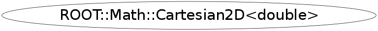

class ROOT::Math::Cartesian2D<double>
Class describing a 2D cartesian coordinate system
(x, y coordinates)
@ingroup GenVector
This class is also known as (typedefs to this class)
ROOT::Math::DisplacementVector2D<ROOT::Math::Cartesian2D<double>,ROOT::Math::DefaultCoordinateSystemTag>::CoordinateType, ROOT::Math::PositionVector2D<ROOT::Math::Cartesian2D<double>,ROOT::Math::DefaultCoordinateSystemTag>::CoordinateTypeFunction Members (Methods)
public:
Class Charts
{kind=link}
{kind=link}
{kind=link}
{kind=link}

Function documentation
void SetCoordinates(ROOT::Math::Cartesian2D<double>::Scalar xx, ROOT::Math::Cartesian2D<double>::Scalar yy)
Set internal data based on 2 Scalar numbers
void GetCoordinates(ROOT::Math::Cartesian2D<double>::Scalar& xx, ROOT::Math::Cartesian2D<double>::Scalar& yy) const
get internal data into 2 Scalar numbers
void SetXY(ROOT::Math::Cartesian2D<double>::Scalar xx, ROOT::Math::Cartesian2D<double>::Scalar yy)
set all values using cartesian coordinates
Scalar x() const
============= Compatibility section ================== The following make this coordinate system look enough like a CLHEP vector that an assignment member template can work with either
{ return X();}void SetR(ROOT::Math::Cartesian2D<double>::Scalar r)
====== Set member functions for coordinates in other systems =======
void SetPhi(ROOT::Math::Cartesian2D<double>::Scalar phi)